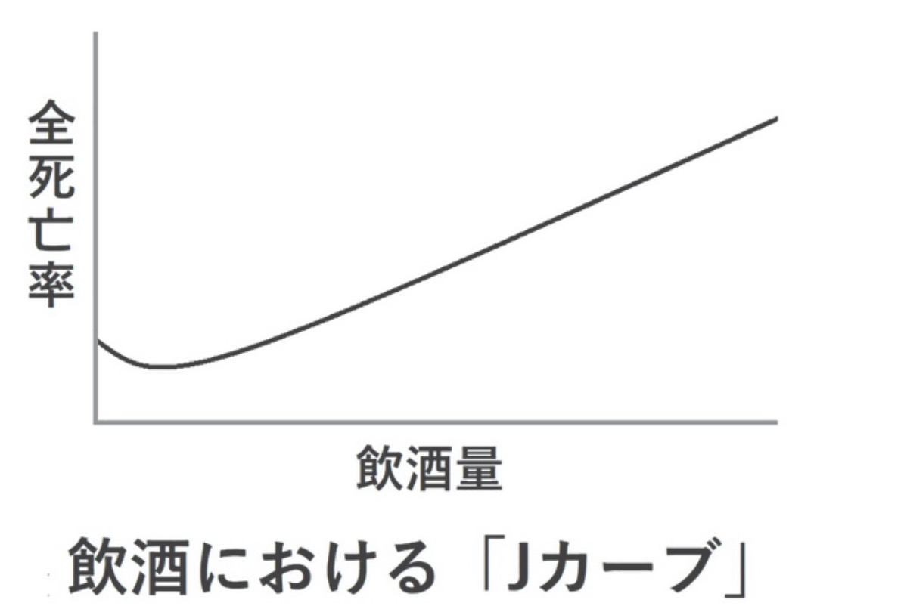
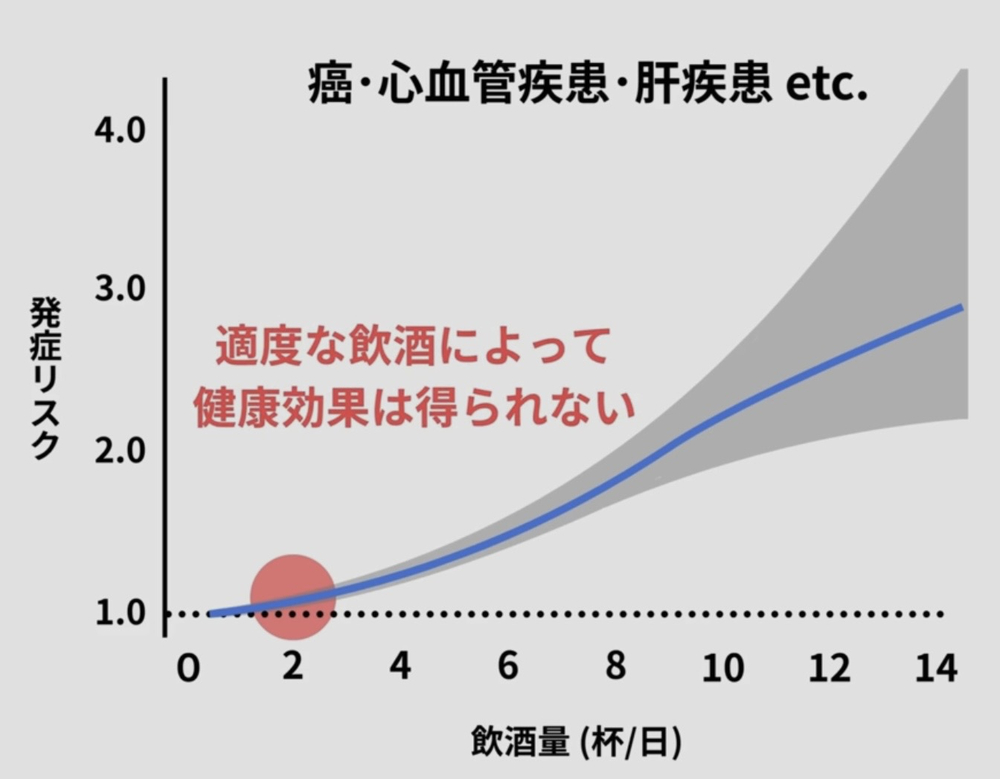

お酒はどのようにしてできるのか
お酒はまず原料の準備から始まります。穀物（米・麦・トウモロコシ）や果実（ぶどうなど）にはデンプンまたは糖が含まれており、果実酒の場合はすでに糖があるためそのまま発酵に進めます。一方、穀物酒ではデンプンを糖に変える「糖化」が必要で、麦芽の酵素や麹菌が用いられます。
続いて発酵の段階では、酵母（主に Saccharomyces 属）が糖を代謝し、糖がエタノールと二酸化炭素、そして熱へと変わる反応が進みます。この過程では温度・酸素・糖濃度の管理によって風味が大きく左右されます。
発酵後は熟成に移り、タンクや樽で一定期間保存することで揮発成分や有機酸が変化し、味わいがまろやかになります。特にワインやウイスキーではこの工程が品質を決定づけます。
最後に、ろ過・加水・炭酸付与・ブレンドなどの仕上げを行い、アルコール度数や香味を整えて完成します。
製法によっては、発酵のみで作る醸造酒（ビール・ワイン・日本酒）、発酵後に蒸留してアルコールを濃縮する蒸留酒（ウイスキー・焼酎・ジン）、そして酒に糖や香料を加える混成酒（リキュール）に分類されます。
少しのお酒は体にいいのか
皆さんの中にははお酒は少しだけならお酒は体にいいと思っている人がいるかも知れません。
「お酒は百薬の長」だとか聞いたことがあると思います。逆に、お酒には肝障害や、脳萎縮、糖尿病や高血糖などの危険性があります。実際のところ少しのお酒はいい影響をもたらすのでしょうか？
下のグラフは飲酒量のグラフでjカーブという形をしています。

これが皆さんの想像する、お酒のリスクをグラフにしたものだと思います。
しかし、最近の研究では下のグラフの様になっていることがわかってきました

グラフでは、リスクの範囲が灰色で書かれています。このグラフでは、少し飲んだだけでもリスクが少なからず上がっていることがわかります。
このことから、お酒をすこし飲むだけでもいい影響があるわけではないが、大きくリスクが上がるわけでもないということがわかります。
お酒はどのように吸収されるか？
まず吸収です。アルコールは消化をほとんど必要とせず、約20％が胃、約80％が小腸から血液へ入ります。空腹時に酔いやすいのは、胃を通過して小腸に早く到達するためです。
次に脳への作用です。アルコールは中枢神経抑制薬で、脳のブレーキ役であるGABA系を強めます。その結果として、判断力の低下、反応速度の低下、気分の高揚が起こります。
酔いは血中アルコール濃度（BAC）の上昇に伴い段階的に変化します。
軽度（ほろ酔い）ではリラックスし会話が増えます。
中等度では注意力の低下やふらつきが見られます。
高度になると運動失調や記憶障害が起こります。
重度では昏睡や呼吸抑制に至ることがあります。
次に分解です。アルコールは主に肝臓で、アルコール → アセトアルデヒド → 酢酸の順に代謝されます。このとき働く酵素が、ADH（アルコール脱水素酵素）とALDH（アルデヒド脱水素酵素）です。
顔が赤くなるのは、ALDHの働きが弱い体質ではアセトアルデヒドが体内に蓄積するためで、顔面紅潮や動悸、吐き気が生じます。東アジアではこの体質が比較的多いことが知られています。
最後に回復です。アルコールの分解速度はほぼ一定で、一般的には1時間あたり約5〜10g程度しか処理できません。したがって「早く酔いを覚ます方法」は基本的に存在せず、時間の経過が唯一の回復手段となります。
お酒の場では本音が言える
「お酒の場では本音が言える」のようなことを耳にすると思います。お酒の場でしか言えないような本音は本音と言えるのでしょうか。
お酒を飲んでいることで責任を逃避して、自信を持って言えないようなことは本音と言えないのではないでしょうか？
ぜひ皆さんも考えてほしいと思います。
自分の体重、お酒の度数と量から血中アルコール濃度と分解時間を計算できます
お酒の度数
ビール 5%
ワイン 14%
シャンパン 12%
日本酒 15%
ウイスキー 40%
焼酎 25%
(kg)
(%)
(ml)
出典:GBD 2016 Alcohol Collaborators, et al. (2018). Alcohol use and burden for 195 countries and territories, 1990-2016. Lancet, 392(10152): 1015-1035.